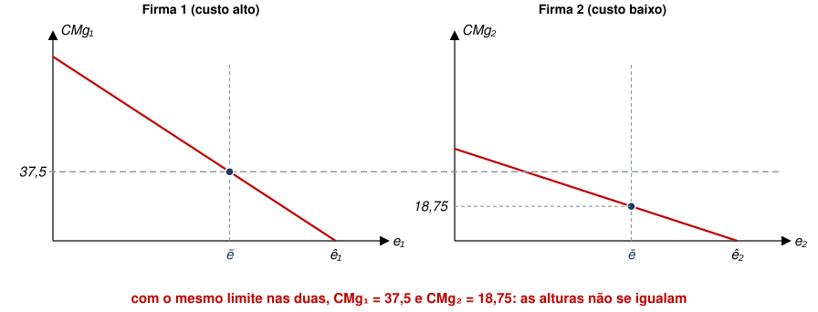
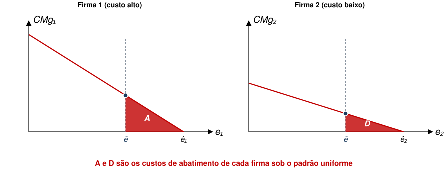
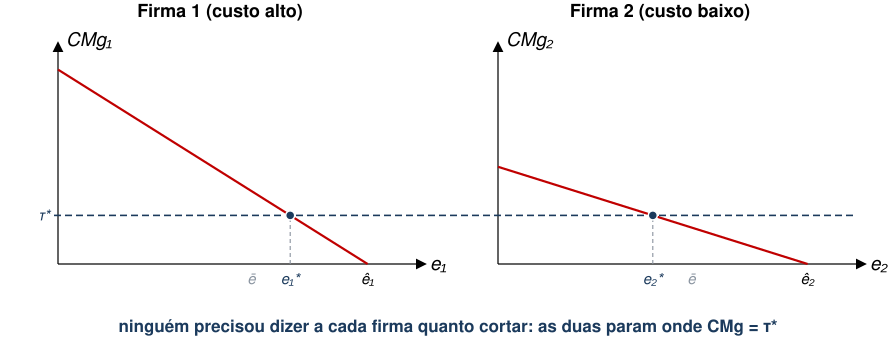
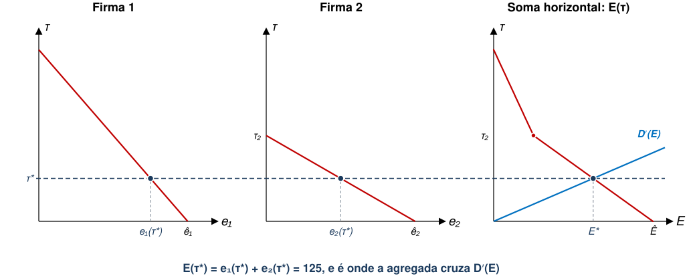

Instrumentos de Política Ambiental
EAE1317 — Economia do Meio Ambiente e dos Recursos Naturais
2026-08-20
Aula Passada
- Modelo de Custos e Danos
- Teorema de Coase
- Alocação de Direitos de Propriedade
- Negociação com poucos agentes e direitos bem definidos.
Agenda
- Instrumentos de Política Ambiental
- Leque de instrumentos
- Comando e Controle
- Imposto sobre Emissões
- Curva de Custo Marginal Agregado de Abatimento
Referências: Phaneuf e Requate, cap. 3; Keohane e Olmstead, cap. 8
Instrumentos de Política Ambiental
Teorema de Coase pode ser aplicável em diversos contextos, mas é desafiador quando há muitos agentes envolvidos.
- É uma limitação importante, pois grande parte das políticas ambientais lida com problemas em que
- Poluidores são muitos e estão espalhados;
- Pessoas afetadas são muitas e estão espalhadas.
Nesses contextos, custos de transação costumam ser proibitivamente altos.
- Intervenção pode ser mais eficiente.
O leque de instrumentos
Keohane e Olmstead (2016) organizam as políticas ambientais em quatro categorias. As duas primeiras serão discutidas nesta aula.
1. Prescrever o regulador diz o que fazer: tecnologia obrigatória ou limite de emissão por fonte
2. Precificar o regulador põe um preço na emissão: imposto ou subsídio
3. Limitar quantidade o regulador fixa o total e deixa o mercado repartir permissões
4. Informar o regulador informa população com inventários de emissão, selos e certificações
- As três primeiras tratam do problema da firma, ao passo que a quarta trata do consumidor.
Exemplos
| Categoria | Implementação | Exemplo prático |
|---|---|---|
| Prescrever | limite ou tecnologia obrigatória, qualidade mínima | CONAMA 297/2002 |
| Precificar | imposto por unidade emitida ou subsídio por unidade abatida | imposto sobre poluição na China (2018) |
| Limitar a quantidade | teto agregado com permissões negociáveis | mercado europeu de carbono |
| Informar | divulgação obrigatória; selos voluntários | Toxics Release Inventory (EUA); selo FSC |
- Imposto e subsídio são dois lados da mesma moeda: cobrar R$ 10 por tonelada emitida dá o mesmo incentivo que pagar R$ 10 por tonelada abatida (Keohane e Olmstead 2016).
- A quarta categoria trata de outra falha de mercado (informação assimétrica), e não da externalidade. Voltaremos a ela depois.
Comando e Controle
Comando e Controle
- Governo determina uma ação de redução de poluição.
- Depois, fiscaliza e pune quem não cumprir.
- As formas mais comuns de comando e controle são
- Requisito de Performance: limite na quantidade de poluição por produto;
- Requisito de Tecnologia: instalação de tecnologias de produção e/ou redução de poluição específicas.
Comando e Controle
- Exemplos de Requisito de Performance:
- Decreto Estadual 59.113/2013: estabelece limites máximos de poluentes do ar no Estado de São Paulo.
- Partículas inaláveis (\(M{P}_{10}\)): \(120\mu g/{m}^{3}\);
- Partículas inaláveis finas (\(M{P}_{2,5}\)): \(60\mu g/{m}^{3}\);
- Ozônio: \(140\mu g/{m}^{3}\) etc.
- Decreto Estadual 59.113/2013: estabelece limites máximos de poluentes do ar no Estado de São Paulo.
- Exemplos de Requisito de Tecnologia:
- Resolução CONAMA nº 297/2002: comercialização de novos veículos e motocicletas com motores que emitam menos poluentes.
Comando e Controle: Mais um Exemplo
Caso: Chuva Ácida na Alemanha em 1980
- Causada parcialmente pela emissão de \(S{O}_{2}\) de geradores a carvão.
- Danos a florestas e lagos no norte da Europa.
- Intervenção: Ordinance on Large Combustion Plants (GFA-VO, 1983, 1990).
- 2.500 mg/m³ de emissão de \(S{O}_{2}\) para firmas existentes;
- 400 mg/m³ de emissão de \(S{O}_{2}\) para novas firmas;
- Meta de redução de enxofre em 85%, o que implicou em instalação de filtros.
Comando e Controle
- Retomemos o modelo da aula passada, em que cada firma tem custo de abatimento \({C}_{j}({e}_{j})\).
- Suponha que o governo queira instituir um limite de poluição. Qual seria o limite mais intuitivo a se propor?
- Talvez \({{e}_{j}\leq e}_{j}^{*}\) para cada firma \(j\)?
- Por que esse limite é pouco realista?
Comando e Controle
- Primeiro, é preciso saber a tecnologia de produção e abatimento de cada firma.
- Segundo, pode ser legalmente impossível impor um limite diferente para cada empresa (princípio da isonomia?).
- Assim, qual seria a segunda melhor alternativa?
- Restringir poluição a limite único para todas as firmas \(\rightarrow {e}_{j}\leq\bar{e}\)
Comando e Controle
- Como definir esse limite único?
- Relembrando a solução de Pareto, temos \(\sum_{j=1}^{J} {e}_{j}^{*}={E}^{*}\)
- Assim, uma possibilidade seria \(\bar{e}=\frac{{E}^{*}}{J}\)
- De modo que \(\sum_{j=1}^{J} \bar{e}=\sum_{j=1}^{J} \frac{{E}^{*}}{J}={E}^{*}\)
- Qual é o potencial problema desse limite?
- Se firmas não forem idênticas, pode haver perda de eficiência.
Este limite já apareceu, sem o nome
Na aula de Custos e Danos, vimos um cenário denominado “corte igual”. Era exatamente \(\bar{e}={E}^{*}/J\) com apenas duas firmas.
| \({e}_{1}\) | \({e}_{2}\) | Custo social | |
|---|---|---|---|
| Corte igual (\(\bar{e}=62{,}5\)) | 62,5 | 62,5 | 2.617 |
| Ótimo | 75 | 50 | 2.500 |
- As duas linhas têm a mesma emissão total (\(E=125\)) e, portanto, o mesmo dano.
- A diferença de 117 se refere à má alocação nos custos de abatimento.
Comando e Controle
Suponha o seguinte caso com 2 firmas, e suponha, ainda, que \({e}_{1}={e}_{2}=\bar{e}=\frac{{E}^{*}}{2}\)

- A Firma 1 abate mais caro do que a Firma 2, mas as duas recebem o mesmo limite.
Comando e Controle
- Neste caso, temos que \(-{C}_{1}^{′}\left(\bar{e}\right)>-{C}_{2}^{′}\left(\bar{e}\right)\)
- Isto viola uma das condições de eficiência de Pareto que vimos anteriormente.
- Graficamente, temos que
- \(A\) é custo de abatimento para Firma 1;
- \(D\) é custo de abatimento da Firma 2.

Comando e Controle
- Haveria ganho de eficiência se Firma 2 absorvesse esforço de abatimento da Firma 1.
- Firma 2 absorve \(C\) para que Firma 1 economize \(B\).
- Peso morto desta intervenção, com \({e}_{j}\leq \bar{e}\), é igual a \(B-C\).

Exercício: as duas usinas, de novo
Em duplas, 5 minutos. As mesmas usinas das aulas passadas: cada uma emite 50 t e cortam poluição, em blocos de 10 t, aos custos discriminados abaixo (em R$ mil).
| 1º bloco | 2º | 3º | 4º | 5º | |
|---|---|---|---|---|---|
| Usina A | 10 | 20 | 30 | 40 | 50 |
| Usina B | 20 | 40 | 60 | 80 | 100 |
- Cada 10 t emitidas causam R$ 45 mil de dano, como antes, e já sabemos que o corte eficiente é 40 t em A e 20 t em B, por R$ 160 mil de abatimento.
- (a) O governo manda cada uma cortar 30 t. Quanto custa?
- (b) Quanto se perde em relação ao corte eficiente?
- (c) Que troca entre as duas desfaria a perda, e por qual preço?
O padrão uniforme incorre em desperdício
| Corte de A | Corte de B | Abatimento | Dano | Custo social | |
|---|---|---|---|---|---|
| Sem regulação | 0 | 0 | 0 | 450 | 450 |
| Padrão uniforme | 30 t | 30 t | 180 | 180 | 360 |
| Corte eficiente | 40 t | 20 t | 160 | 180 | 340 |
| Desperdício do padrão uniforme | 20 | 0 | 20 |
- Nos cenários de padrão uniforme e corte eficiente, chegamos às mesmas 60 t no equilíbrio, logo o dano é o mesmo. No entanto, custos de abatimento mal alocados levam a perdas.
- (c) A corta um bloco a mais (R$ 40 mil) e B corta um a menos (economiza R$ 60 mil): qualquer preço entre 40 e 60 faz as duas ganharem.
- Guardem isto, pois fundamentará o mercado de permissões das próximas aulas.
Imposto sobre Emissões
Precificando poluição
1. Prescrever o regulador diz o que fazer: tecnologia obrigatória ou limite de emissão por fonte
2. Precificar o regulador põe um preço na emissão: imposto ou subsídio
3. Limitar a quantidade o regulador fixa o total e deixa o mercado repartir: permissões
4. Informar o regulador divulga: inventários de emissão, selos e certificações
- No comando-e-controle, o regulador busca escolher a alocação final.
- No imposto, regulador escolhe o preço da poluição, e a alocação é escolhida pelas firmas.
- Ou seja, usa preços para internalizar a externalidade.
Imposto sobre Emissões
Como incluir imposto pago por unidade de emissão no modelo?
\[T{C}_{j}\left({e}_{j}\right)={C}_{j}\left({e}_{j}\right)+\tau {e}_{j}\]
- Em que \(T{C}_{j}({e}_{j})\) é o custo total da firma associado à poluição.
- Qual é a condição de primeira ordem deste problema?
\[-{C}_{j}^{′}\left({e}_{j}\right)=\tau\]
- Firma iguala custo marginal de abatimento ao “preço” da emissão.
Imposto sobre Emissões
Intuição: firma reduz emissões enquanto o custo adicional de abatimento for menor do que o imposto pago por unidade emitida.
- Ou seja, firma prefere reduzir sua própria poluição se isto for mais barato do que poluir e pagar taxa.
- Note que as CPOs também implicam em
\[-{C}_{j}^{′}\left({e}_{j}\right)=\tau =-{C}_{k}^{′}\left({e}_{k}\right)\ \forall j\neq k\]
Preço único induz a quantidades diferentes para cada firma

- O regulador anuncia um número só, sem precisar conhecer \({C}_{1}\) nem \({C}_{2}\).
- A condição \(CM{g}_{1}=CM{g}_{2}\) é resultado de equilíbrio, não exigência.
Imposto sobre Emissões
Qual deveria ser o valor da alíquota \(\tau\) para alcançarmos o Ótimo de Pareto?
- Sabemos que \(-{C}_{j}^{′}\left({e}_{j}^{*}\right)=D′({E}^{*})\) é a condição de ótimo social.
- Em que \(\{{e}_{1}^{*},...,{e}_{J}^{*}\}\) é a alocação ótima tal que \(\sum{e}_{j}^{*}={E}^{*}\)
- Logo, \({\tau }^{*}={D}^{′}\left({E}^{*}\right)\) induz a alocação ótima de Pareto
\({\tau }^{*}\) é o \({\mu }^{*}\) da aula de Custos e Danos
Considerem as mesmas funções de antes:
\(CM{g}_{1}=100-{e}_{1}\), \(CM{g}_{2}=50-0{,}5{e}_{2}\) e \({D}^{′}\left(E\right)=0{,}2E\).
Temos
\[{\mu }^{*}=25 \quad \Longrightarrow \quad {\tau }^{*}=25\]
- Antes, \({\mu }^{*}\) era o multiplicador de um problema resolvido por um planejador central que conhecia as duas funções de custo.
- Aqui, é um preço anunciado por quem não conhece nenhuma delas, mas devolve a mesma alocação.
- O contrato de Coase fez o mesmo por um terceiro caminho: transformar dano alheio em despesa própria.
Imposto sobre Emissões
- De outra forma, também podemos interpretar \(\tau\) como o preço da emissão
- Com isso, podemos definir a Demanda Agregada por Poluição das firmas em função da alíquota \(\tau\).
\[E\left(\tau \right)=\sum_{j=1}^{J} {e}_{j}(\tau )\]
- Graficamente, para as firmas 1 e 2, é a soma horizontal das duas curvas de custo marginal de abatimento.
Imposto sobre Emissões
Para cada nível de \(\tau\), temos um nível de \(E\left(\tau\right)={e}_{1}\left(\tau \right)+{e}_{2}(\tau )\)

- Acima de \({\tau }_{2}\) a Firma 2 já zerou emissões, e só a Firma 1 responde: curva agregada muda de inclinação.
Imposto sobre Emissões
Como a poluição varia com o imposto (taxa)?
- Vamos diferenciar \(-{C}_{j}^{′}\left({e}_{j}\right)=\tau\)
\[-{C}_{j}^{′′}\left({e}_{j}\right)\frac{d{e}_{j}\left(\tau \right)}{d\tau }=1 \to \frac{d{e}_{j}\left(\tau \right)}{d\tau }=\frac{1}{-{C}_{j}^{′′}\left({e}_{j}\right)}<0\]
- Sabendo que \(E\left(\tau \right)={e}_{1}\left(\tau \right)+{e}_{2}(\tau )\), temos que \(\frac{dE}{d\tau }<0\)
- Isto implica que, se regulador souber estrutura de custo das firmas, pode-se alcançar qualquer nível de \(E\) desejado.
- O problema é que dificilmente há informação perfeita, como discutiremos depois.
As três políticas lado a lado
| Sem regulação | Padrão uniforme \(\bar{e}\) | Imposto \({\tau }^{*}\) | |
|---|---|---|---|
| Emissão total | 200 | 125 | 125 |
| \(CM{g}_{1}\) e \(CM{g}_{2}\) | \(0=0\) | \(37{,}5 \neq 18{,}75\) | \(25=25\) |
| Custo de abatimento | 0 | 1.055 | 938 |
| Dano | 4.000 | 1.563 | 1.563 |
| Custo social | 4.000 | 2.617 | 2.500 |
| Quem paga, e a quem | ninguém | as firmas, sem contrapartida | as firmas, ao governo |
- Notem que a arrecadação de \({\tau }^{*}{E}^{*}=3.125\) não entra no custo social: é apenas transferência entre agentes.
- Mas pode tornar o imposto politicamente mais difícil que o padrão uniforme.
Exercício de Fixação
Suponha uma economia com 2 firmas e 2 consumidores. Assuma que os custos de abatimento são
\[{C}_{1}\left({e}_{1}\right)=\frac{{\left(5-{e}_{1}\right)}^{2}}{2}\ ;\ {C}_{2}\left({e}_{2}\right)=\frac{{\left(8-2{e}_{2}\right)}^{2}}{2}\]
Assuma que o dano causado a cada consumidor é dado por \({D}_{i}\left(E\right)=\frac{{E}^{2}}{2}\)
- (a) Qual é o nível ótimo individual de cada firma?
- (b) Qual é o nível ótimo de poluição?
- (c) Qual é o imposto de Pigou apropriado?
- (d) Qual é o custo total de cada firma?
Exercício de Fixação: resolução
São 2 consumidores, logo \(D\left(E\right)={E}^{2}\) e \({D}^{′}\left(E\right)=2E\), com \(-{C}_{1}^{′}=5-{e}_{1}\) e \(-{C}_{2}^{′}=16-4{e}_{2}\).
- (a) Sem regulação, cada firma abate até \(-{C}_{j}^{′}=0\): \(\hat{e}_{1}=5\) e \(\hat{e}_{2}=4\).
- (b) A solução interior exigiria \(-{C}_{1}^{′}=-{C}_{2}^{′}={D}^{′}\), o que daria \(\tau =36/7\) e \({e}_{1}=-1/7\). Inviável, então \({e}_{1}^{*}=0\), e minimizar \({C}_{2}+D\) em \({e}_{2}\) devolve \({e}_{2}^{*}={E}^{*}=8/3\).
- (c) \({\tau }^{*}={D}^{′}\left({E}^{*}\right)=16/3\approx 5{,}33\), e \(-{C}_{1}^{′}\left(0\right)=5<{\tau }^{*}\) confirma que a firma 1 zera a emissão.
- (d) \(T{C}_{1}=12{,}5\), só abatimento; \(T{C}_{2}=32/9+128/9=160/9\approx 17{,}8\).
- Ou seja, \(-{C}_{j}^{′}\left({e}_{j}\right)=\tau\) vale só no interior: no canto ela se torna \(-{C}_{j}^{′}\left(0\right)\leq \tau\).
Exemplo Prático
Em 2018, a China implementou um imposto sobre poluição no país inteiro.
- Como já existia uma tarifa de poluição antes, algumas províncias experimentaram aumento de imposto e outras não;
- Diff-in-Diff comparando províncias com aumento de imposto versus as outras.
Exemplo Prático
- Introdução do imposto causa redução nas emissões em províncias tratadas.
- Aumento de 1 yuan (+50%) no imposto por unidade gera queda de
- 3,8% na média de \(P{M}_{2.5}\);
- 18,6% na média de \(S{O}_{2}\);
- 5,6% na média de \(N{O}_{2}\).
A categoria que ficou de fora
Keohane e Olmstead (2016) elencam uma quarta categoria de instrumentos focada em informar agentes.
- Divulgação obrigatória. Nos EUA, o Toxics Release Inventory obriga fábricas, desde 1988, a declarar quanto emitem de mais de 300 substâncias tóxicas. Isto é publicado pela agência ambiental (EPA).
- Selos e certificação. FSC para madeira, Marine Stewardship Council para pesca: voluntários e, em geral, operados por organizações não governamentais.
- Como o imposto, agem de forma descentralizada: mudam o incentivo e deixam cada um decidir.
- Diferente do imposto, o incentivo é indireto, pois da reação de consumidores e cidadãos à informação.
Informar resolve outra falha
- Rótulo e inventário buscam resolver informação assimétrica: revelam ao cidadão o que a fábrica ao lado emite; ou, ao consumidor, como foi feito o produto.
- A externalidade e o bem público continuam de pé: apenas a informação não internaliza o dano.
- Por isso o alcance dessas políticas é mais limitado que o de um imposto ou de uma cota.
E os empurrõezinhos?
Políticas que mudam comportamento sem mudar preço ou regra (Keohane e Olmstead 2016).
- Opower. Relatórios de consumo de energia que comparam a casa com as vizinhas, usados por mais de 85 distribuidoras nos EUA. A queda é pequena, mas persiste. No longo prazo, leva à troca de lâmpadas e eletrodomésticos.
- Atlanta. Cartas a clientes sobre consumo de água: informação técnica, apelo à seca, ou comparação com a vizinhança. Três grupos tratados com cartas economizaram; o da comparação economizou mais.
- O efeito é pequeno, mas o custo também.
Referências
EAE1317 — Economia do Meio Ambiente e dos Recursos Naturais